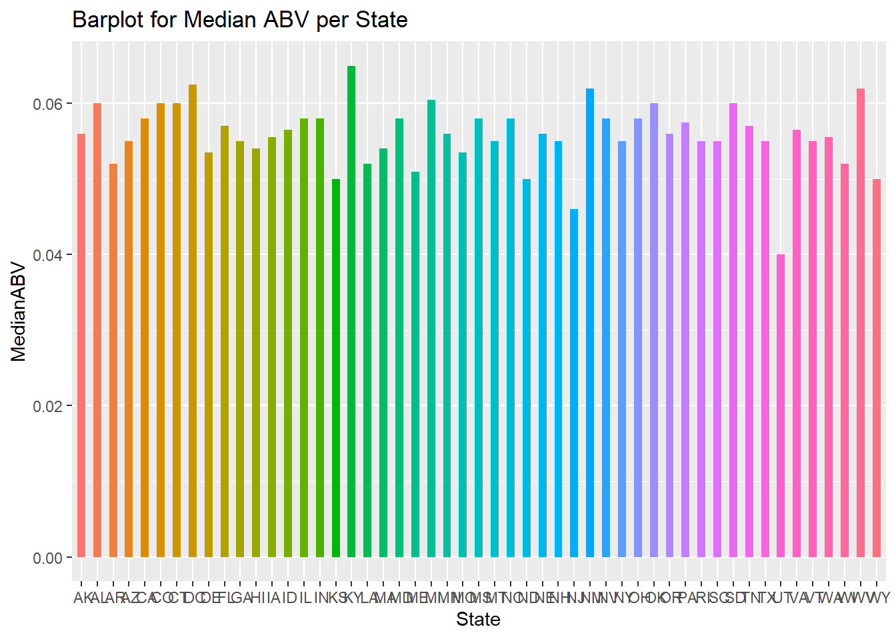

Greetings! Today we will be discussing “Beers and Breweries” within the United States. We will be covering what we can infer about the data points at hand as well as interesting key topics that you might find valuable for the business. We were able to develop some code to analyze this data. Please be advised that R was used to write the code for statistics and to visualize the data. At the end of this document, you will leave with enough sustainable information.
#Load required libraries
library(ggplot2)
library(dplyr)##
## Attaching package: 'dplyr'## The following objects are masked from 'package:stats':
##
## filter, lag## The following objects are masked from 'package:base':
##
## intersect, setdiff, setequal, unionlibrary(tidyr)
library(stringr)
library(magrittr)##
## Attaching package: 'magrittr'## The following object is masked from 'package:tidyr':
##
## extractlibrary(maps)
library(mapproj)
library(maptools)## Warning: package 'maptools' was built under R version 3.6.3## Loading required package: sp## Warning: package 'sp' was built under R version 3.6.3## Checking rgeos availability: FALSE
## Note: when rgeos is not available, polygon geometry computations in maptools depend on gpclib,
## which has a restricted licence. It is disabled by default;
## to enable gpclib, type gpclibPermit()library(GGally)## Registered S3 method overwritten by 'GGally':
## method from
## +.gg ggplot2##
## Attaching package: 'GGally'## The following object is masked from 'package:dplyr':
##
## nasalibrary(ggalt)## Warning: package 'ggalt' was built under R version 3.6.3## Registered S3 methods overwritten by 'ggalt':
## method from
## grid.draw.absoluteGrob ggplot2
## grobHeight.absoluteGrob ggplot2
## grobWidth.absoluteGrob ggplot2
## grobX.absoluteGrob ggplot2
## grobY.absoluteGrob ggplot2library(mice)## Warning: package 'mice' was built under R version 3.6.3##
## Attaching package: 'mice'## The following objects are masked from 'package:base':
##
## cbind, rbindlibrary(e1071)
library(class)
library(caret)## Loading required package: lattice#Import the data
beers = read.csv("C:\\Users\\kenny\\Documents\\SMU\\DS-6306 Doing Data Science\\Case Study 1\\Beers.csv", header = TRUE)
breweries = read.csv("C:\\Users\\kenny\\Documents\\SMU\\DS-6306 Doing Data Science\\Case Study 1\\Breweries.csv", header = TRUE)The purpose of this block is to find out how many breweries are present per each state. To that we need to utilize the breweries file to obtain and visually produce this information.
#Lets first create a new data frame that only includes the number of breweries per state.
breweriesMapData = count(breweries, State)
#The count column was produced as a random variable, need to change that to a name thats more clean
colnames(breweriesMapData)[2] = "Number_of_Breweries"
#Lets visualize the data in a nice bar chart
breweriesMapData %>% ggplot(aes(x = State, y = Number_of_Breweries, fill = State)) + geom_bar(stat = "identity", width = .5) +
labs(title = "Breweries", subtitle = "State and # of Breweries", caption = "breweries") + theme(axis.text.x = element_text(angle = 65, vjust = 0.6), legend.position = "none")In order to get the best out of this evaluation, we will need to merge both the datasets together so it can be presentable. The datasets were joined by an indicator, in this case the common indicator is “Brew_ID”.
#Need to change the column name for Breweries ID to a common name.
colnames(beers)[5] = "Brew_ID"
#Combining to one dataset called beersAndBrew
beersAndBrew = full_join(beers, breweries, by = "Brew_ID")
colnames(beersAndBrew)[1] = "Beer_Name"
colnames(beersAndBrew)[8] = "Brewery_Name"
#Print the first 6 observations
head(beersAndBrew, 6)## Beer_Name Beer_ID ABV IBU Brew_ID Style Ounces
## 1 Pub Beer 1436 0.050 NA 409 American Pale Lager 12
## 2 Devil's Cup 2265 0.066 NA 178 American Pale Ale (APA) 12
## 3 Rise of the Phoenix 2264 0.071 NA 178 American IPA 12
## 4 Sinister 2263 0.090 NA 178 American Double / Imperial IPA 12
## 5 Sex and Candy 2262 0.075 NA 178 American IPA 12
## 6 Black Exodus 2261 0.077 NA 178 Oatmeal Stout 12
## Brewery_Name City State
## 1 10 Barrel Brewing Company Bend OR
## 2 18th Street Brewery Gary IN
## 3 18th Street Brewery Gary IN
## 4 18th Street Brewery Gary IN
## 5 18th Street Brewery Gary IN
## 6 18th Street Brewery Gary IN#Print the last 6 Observations
tail(beersAndBrew, 6)## Beer_Name Beer_ID ABV IBU Brew_ID Style Ounces
## 2405 Rocky Mountain Oyster Stout 1035 0.075 NA 425 American Stout 12
## 2406 Belgorado 928 0.067 45 425 Belgian IPA 12
## 2407 Rail Yard Ale 807 0.052 NA 425 American Amber / Red Ale 12
## 2408 B3K Black Lager 620 0.055 NA 425 Schwarzbier 12
## 2409 Silverback Pale Ale 145 0.055 40 425 American Pale Ale (APA) 12
## 2410 Rail Yard Ale (2009) 84 0.052 NA 425 American Amber / Red Ale 12
## Brewery_Name City State
## 2405 Wynkoop Brewing Company Denver CO
## 2406 Wynkoop Brewing Company Denver CO
## 2407 Wynkoop Brewing Company Denver CO
## 2408 Wynkoop Brewing Company Denver CO
## 2409 Wynkoop Brewing Company Denver CO
## 2410 Wynkoop Brewing Company Denver COMissing data can be cumbersome, what we did to replace the missing values is use the mice function which computes the mean/median/mode of the columns at hand. This is handy as it evaluates the data based on similar observations and replace the missing values with the closest match (mean, median, or mode).
#Need to create a new data frame with just ABV and IBU for faster compute time
ABVandIBU = beersAndBrew %>% select(ABV, IBU)
#Wrapper on MICE function which makes the response time for the function much faster. Adds an extra argument called droplist, where you can pass a character vector of predictor variables that you do not want used in the right-hand-side of the imputation formulas
ImputeData = function(data, m = 10, maxit = 15, droplist = NULL)
{
if(length(intersect(names(data), droplist)) < length(droplist))
{
stop("Droplist variables not found in data set")
}
predictorMatrix = (1 - diag(1,ncol(data)))
for (term in droplist)
{
drop.index = which(names(data) == term)
predictorMatrix[, drop.index] = 0
}
mids.out = mice(data, m = m, maxit = maxit, predictorMatrix = predictorMatrix)
return(mids.out)
}
imp = ImputeData(ABVandIBU, m = 1, maxit = 10)##
## iter imp variable
## 1 1 ABV IBU
## 2 1 ABV IBU
## 3 1 ABV IBU
## 4 1 ABV IBU
## 5 1 ABV IBU
## 6 1 ABV IBU
## 7 1 ABV IBU
## 8 1 ABV IBU
## 9 1 ABV IBU
## 10 1 ABV IBUABVandIBU = complete(imp)
beersAndBrew = cbind(beersAndBrew, ABVandIBU)
#Rename to delete columns
colnames(beersAndBrew)[3] = "a"
colnames(beersAndBrew)[4] = "b"
beersAndBrew = select(beersAndBrew, -c(3:4))
#Reorder data
beersAndBrew = beersAndBrew[c(1,2,9,10,3,4,5,6,7,8)]We want to see what the median ABV and IBU (Bitterness) for each state. To do this we need to summarise the data and be able to present in a bar graph format.In the bar charts we can see the frequency per state for the medians per the levels (ABV, IBU).
#Select the data points needed and create a new data frame, in this case by median
byState = beersAndBrew %>% select(ABV, IBU, State) %>% group_by(State) %>% summarise(MedianABV = median(ABV), MedianIBU = median(IBU))
#Plot the data frame for ABV
byState %>% ggplot(aes(x = State, y = MedianABV, fill = State)) + geom_bar(stat = "identity", width = .5) + theme(legend.position = "none") + ggtitle("Barplot for Median ABV per State")
#Plot the data frame for IBU
byState %>% ggplot(aes(x = State, y = MedianIBU, fill = State)) + geom_bar(stat = "identity", width = .5) + theme(legend.position = "none") + ggtitle("Barplot for Median IBU per State")##Part 5: The State with the max alcoholic beer and the state that produces the most bitter beer. The idea for this block is to figure out which state produces the most alcoholic beeer as well as the state with the bitterist beer. As per the consensus: IBU: Oregon and Hawaii - 138 ABV: Colorado - 12.8%
#Finding the highest value for IBU and then tracing the state
max(beersAndBrew$IBU)## [1] 138#Filter the State by above value
beersAndBrew %>% select(State, IBU) %>% filter(IBU == 138)## State IBU
## 1 CA 138
## 2 OR 138#Finding the highest value for ABV and then tracing the state
max(beersAndBrew$ABV)## [1] 0.128#Filter the state with above value
beersAndBrew %>% select(State, ABV) %>% filter(ABV == 0.128)## State ABV
## 1 CO 0.128#Part 6: Summary statistics for ABV Figuring out the distribution and the statistics for alcohol content is also key. Especially when drinking beer, the higher the alcohol content the more the effects are felt. It is an important characteristic of a beer. Let dwelve into this variable.
As per the below histogram and summary we can see the the distribution is skewed slightly to the right but not signifcantly. This tells us the mean is larger than the median ever so slightly. In response to all the beers we can see that the majority of the beers hover around .04 to .065.
#Lets get the summary
summary(beersAndBrew$ABV)## Min. 1st Qu. Median Mean 3rd Qu. Max.
## 0.00100 0.05000 0.05600 0.05975 0.06700 0.12800#Lets find the distribution
beersAndBrew %>% ggplot(aes(x = ABV)) + geom_histogram(fill = "red", color = "black") + stat_function(fun = dnorm, args = list(mean = mean(beersAndBrew$ABV), sd = sd(beersAndBrew$ABV))) + ggtitle("Distribution of ABV") + ylab("Frequency")## `stat_bin()` using `bins = 30`. Pick better value with `binwidth`.Is there any relationship between ABV and IBU? This is something the below code chunk can help address. An assumption that can be made is that as ABV rises so does bitterness and vice versa. In real world scenarios, its better not to assume.
The below scatter plot shows that there is some kind of relationship between ABV and IBU. Based on this graph its hard to justify whether ABV percentage leads to increased bitterness. It seems that a vast majority of beers in the 5 to 10 percent range have high bitterness. However, there are some in which high ABV attains to a high bitterness level.
#Scatter Graph
beersAndBrew %>% ggplot(aes(x = IBU, y = ABV)) + geom_point(position = "jitter") + geom_smooth(method = "loess", se=F, color = "blue") +
xlim(c(0, 150)) + ylim(c(0, .15)) + ggtitle("Scatter Graph of Relation Between IBU and ABV")One of the few takeaways for this presentation is to investigate the difference between IPA’s and Ale’s based on ABV and IBU. If we feed the training set with a beer with both ABV and IBU will it correctly classify the beer type? For the most part it does. If you feed the model specific values then the KNN algorithm correctly classify the right type based on its nearest neigbor. In this scenario, IPA has a higher ABV and IBU compared to Ale’s.
The accuracy is not as strong as one would hope, but its not bad either. Based on the train and test split there seems to be more Ale’s than IPA’s. Initially, as k rises so does the accuracy; as it reaches into the teens the accuracy tapers off to stay around 75%. This data could change based on more IPA’s being produced. As of right now the Ales far outweigh the IPA. In order to achieve 100% accuracy we need more equal number of beers per type.
library(class)
library(caret)
library(e1071)
#Create dataset with only IPAs and Ales.
beersALEIPA <- beers %>% select(Name, ABV, IBU, Style) %>% filter(!is.na(IBU)) %>% filter(str_detect(Style, "(IPA|Ale)"))
#Create new column for type
beersALEIPA <- beersALEIPA %>% mutate(IPAorAle = ifelse(grepl("IPA", beersALEIPA$Style),"IPA","Ale"))
#plot
beersALEIPA %>% ggplot(aes(x = ABV, y = IBU, color = IPAorAle)) + geom_point()#Start KNN inital test by feeding a random ABV and IBU
beerTest = data.frame(ABV = 0.05, IBU = 45)
knn(beersALEIPA[,2:3], beerTest, beersALEIPA$IPAorAle, k = 7, prob = TRUE)## [1] Ale
## attr(,"prob")
## [1] 0.8571429
## Levels: Ale IPA#Train data set and test data set, evaluate with both
set.seed(6)
splitPerc = .70
trainIndices = sample(1:dim(beersALEIPA)[1], round(splitPerc * dim(beersALEIPA)[1]))
train = beersALEIPA[trainIndices,]
test = beersALEIPA[-trainIndices,]
# k = 3
classifications = knn(train[, c(2,3)], test[, c(2,3)], train$IPAorAle, prob = TRUE, k = 3)
table(classifications, test$IPAorAle)##
## classifications Ale IPA
## Ale 143 24
## IPA 20 96confusionMatrix(table(classifications, test$IPAorAle))## Confusion Matrix and Statistics
##
##
## classifications Ale IPA
## Ale 143 24
## IPA 20 96
##
## Accuracy : 0.8445
## 95% CI : (0.797, 0.8847)
## No Information Rate : 0.576
## P-Value [Acc > NIR] : <2e-16
##
## Kappa : 0.6803
##
## Mcnemar's Test P-Value : 0.6511
##
## Sensitivity : 0.8773
## Specificity : 0.8000
## Pos Pred Value : 0.8563
## Neg Pred Value : 0.8276
## Prevalence : 0.5760
## Detection Rate : 0.5053
## Detection Prevalence : 0.5901
## Balanced Accuracy : 0.8387
##
## 'Positive' Class : Ale
## # k = 7
classifications = knn(train[, c(2,3)], test[, c(2,3)], train$IPAorAle, prob = TRUE, k = 7)
table(classifications, test$IPAorAle)##
## classifications Ale IPA
## Ale 145 26
## IPA 18 94confusionMatrix(table(classifications, test$IPAorAle))## Confusion Matrix and Statistics
##
##
## classifications Ale IPA
## Ale 145 26
## IPA 18 94
##
## Accuracy : 0.8445
## 95% CI : (0.797, 0.8847)
## No Information Rate : 0.576
## P-Value [Acc > NIR] : <2e-16
##
## Kappa : 0.6789
##
## Mcnemar's Test P-Value : 0.2913
##
## Sensitivity : 0.8896
## Specificity : 0.7833
## Pos Pred Value : 0.8480
## Neg Pred Value : 0.8393
## Prevalence : 0.5760
## Detection Rate : 0.5124
## Detection Prevalence : 0.6042
## Balanced Accuracy : 0.8365
##
## 'Positive' Class : Ale
## #k = 13
classifications = knn(train[, c(2,3)], test[, c(2,3)], train$IPAorAle, prob = TRUE, k = 13)
table(classifications, test$IPAorAle)##
## classifications Ale IPA
## Ale 147 29
## IPA 16 91confusionMatrix(table(classifications, test$IPAorAle))## Confusion Matrix and Statistics
##
##
## classifications Ale IPA
## Ale 147 29
## IPA 16 91
##
## Accuracy : 0.841
## 95% CI : (0.7931, 0.8816)
## No Information Rate : 0.576
## P-Value [Acc > NIR] : < 2e-16
##
## Kappa : 0.6697
##
## Mcnemar's Test P-Value : 0.07364
##
## Sensitivity : 0.9018
## Specificity : 0.7583
## Pos Pred Value : 0.8352
## Neg Pred Value : 0.8505
## Prevalence : 0.5760
## Detection Rate : 0.5194
## Detection Prevalence : 0.6219
## Balanced Accuracy : 0.8301
##
## 'Positive' Class : Ale
## #Now going to loop through more than one k and find the average
iterations = 500
numks = 30
masterAcc = matrix(nrow = iterations, ncol = numks)
for(j in 1:iterations)
{
accs = data.frame(accuracy = numeric(30), k = numeric(30))
trainIndices = sample(1:dim(beersALEIPA)[1], round(splitPerc * dim(beersALEIPA)[1]))
train = beersALEIPA[trainIndices,]
test = beersALEIPA[-trainIndices,]
for(i in 1:numks)
{
classifications = knn(train[, c(2,3)], test[, c(2,3)], train$IPAorAle, prob = TRUE, k = i)
table(classifications, test$IPAorAle)
CM = confusionMatrix(table(classifications,test$IPAorAle))
masterAcc[j,i] = CM$overall[1]
}
}
MeanAcc = colMeans(masterAcc)
plot(seq(1,numks,1),MeanAcc, type = "l")As a business we would like to see in what areas its best to improve on. As per that note, we decided to give more supplemental information that can help drive sales in some regard.
The below illustrates which region in the US that we see the most IPA beers brewed. It would be best to see this visually, therefore we created a heat map that indicates which regions IPA beer thrive. As per part 8, there were more Ale beers then there were IPA’s. I believe IPAs are still not as popular as Ale’s because of its higher ABV and bitterness. IPA beers provide more bang for the buck and it should definitely be looked into where they tend to thrive and which areas it can improve. The output below should tell us indirectly which area drinks more IPA’s.
#Re-initalize the IPA and Ale beers data frame with state
IPABeers = beersAndBrew %>% select(Beer_Name, ABV, IBU, Style, State) %>% filter(str_detect(Style, "IPA"))
AleBeers = beersAndBrew %>% select(Beer_Name, ABV, IBU, Style, State) %>% filter(str_detect(Style, "Ale"))
#replace all white spaces in states otherwise it will not run properly
IPABeers$State = str_replace(IPABeers$State, " ", "")
#need to convert abbreviation for state to name
library(openintro)## Please visit openintro.org for free statistics materials##
## Attaching package: 'openintro'## The following object is masked from 'package:caret':
##
## dotPlot## The following object is masked from 'package:lattice':
##
## lsegments## The following object is masked from 'package:ggplot2':
##
## diamonds## The following objects are masked from 'package:datasets':
##
## cars, trees#Load above library to use function abbr2state and create new column for state name
IPABeers$State_Name = abbr2state(IPABeers$State)
#make lowercase for state names as map package will not work
IPABeers$State_Name = tolower(IPABeers$State_Name)
#Count IPA Beers by state
NumberStates = count(IPABeers, State)
#Create state data frame for United States map
states = map_data("state")
map.df = merge(states, IPABeers, by.x = "region", by.y = "State_Name", all.x = T)
map.df = merge(NumberStates, map.df, by = "State")
map.df = map.df[order(map.df$order),]
colnames(map.df)[2] = "Amount"
#Create heat map on US states
map.df %>% ggplot(aes(x = long, y = lat, group = group)) + geom_polygon(aes(fill = Amount)) + geom_path() +
scale_fill_gradientn(colours = rev(heat.colors(10)), na.value = "grey90") + coord_map() + ggtitle("Heat Map of IPA Beers Brewed")Based on the heat map, it does look like IPA beers are slightly more dominant on the western side of North America. However, it does look like the more eastern states consume IPA beers as well, compared to the south and midwest. Its more profitable to venture with new IPA products in the West and some states in the East.
As a business person, one may also want to know which type of beer is more often produced in which part of the country. This data may be necessary when attempting to market to a specific segment of the U.S. One could easily compare the most common beer produced with the sales data from eahc state to determine if different production choices should be made.
For this presentation of data we also chose a heat map, detailing not the count but the most common beer produced in each state. Please note that the decision of how to break down each category is not authoritative, and different data may be obtained from a different set of aggragations.
#Classify beers into types for use in aggragation. The code executes checks in order on each line.
Beers_Breweries <- beersAndBrew %>% mutate(StyleCategory =
case_when(str_detect(beersAndBrew$Style, "IPA") ~ "IPA",
str_detect(beersAndBrew$Style, "Wheat Ale") ~ "Wheat Ale",
str_detect(beersAndBrew$Style, "APA") ~ "APA",
str_detect(beersAndBrew$Style, "Strong Ale") ~ "Strong Ale",
str_detect(beersAndBrew$Style, "Dark Ale") ~ "Dark Ale",
str_detect(beersAndBrew$Style, "Mild Ale") ~ "Mild Ale",
str_detect(beersAndBrew$Style, "Old Ale") ~ "Old Ale",
str_detect(beersAndBrew$Style, "Farmhouse Ale") ~ "Ale",
str_detect(beersAndBrew$Style, "Ale") ~ "Ales(Other)",
str_detect(beersAndBrew$Style, "Lager") ~ "Lager",
str_detect(beersAndBrew$Style, "Barleywine") ~ "Barleywine",
str_detect(beersAndBrew$Style, "Liquor") ~ "Liquor",
str_detect(beersAndBrew$Style, "Pilsner") ~ "Pilsner",
str_detect(beersAndBrew$Style, "Porter") ~ "Porter",
str_detect(beersAndBrew$Style, "Stout") ~ "Stout",
str_detect(beersAndBrew$Style, "Beer") ~ "Beer",
str_detect(beersAndBrew$Style, "Cider") ~ "Cider",
str_detect(beersAndBrew$Style, "Lager") ~ "Lager",
str_detect(beersAndBrew$Style, "Bitter") ~ "Bitter",
TRUE ~ "Other/Unknown"))
#find the number of each type of beer manufactured in each state.
BeerTypes_State <- Beers_Breweries %>% group_by(State,StyleCategory) %>% summarize(Beers = n())
#Find only the top produced beer in each state.
MostCommonBeer <- BeerTypes_State %>% group_by(State) %>% top_n(1,Beers)
#replace all white spaces in states otherwise it will not run properly
MostCommonBeer$State = str_replace(MostCommonBeer$State, " ", "")
#need to convert abbreviation for state to name
library(openintro)
#Load above library to use function abbr2state and create new column for state name
MostCommonBeer$State_Name = abbr2state(MostCommonBeer$State)
#make lowercase for state names as map package will not work
MostCommonBeer$State_Name = tolower(MostCommonBeer$State_Name)
#Count IPA Beers by state
NumberStates = count(MostCommonBeer, State)
#Create state data frame for United States map
states = map_data("state")
map.df = merge(states, MostCommonBeer, by.x = "region", by.y = "State_Name", all.x = T)
map.df = merge(NumberStates, map.df, by = "State")
map.df = map.df[order(map.df$order),]
#Create heat map on US states
map.df %>% ggplot(aes(x = long, y = lat, group = group)) + geom_polygon(aes(fill = StyleCategory)) + geom_path() + coord_map() + ggtitle("Heat Map of Most Common Beer Type")Based on the heat map, it appears that the most commonly produced beers across the majority of the states are the IPAs. Within the “Other/Unknown” category were placed the specialized beers with foreign names or single word names. Notably, only Wisconsin had a majoriy of beer types produced as “Lagers”.